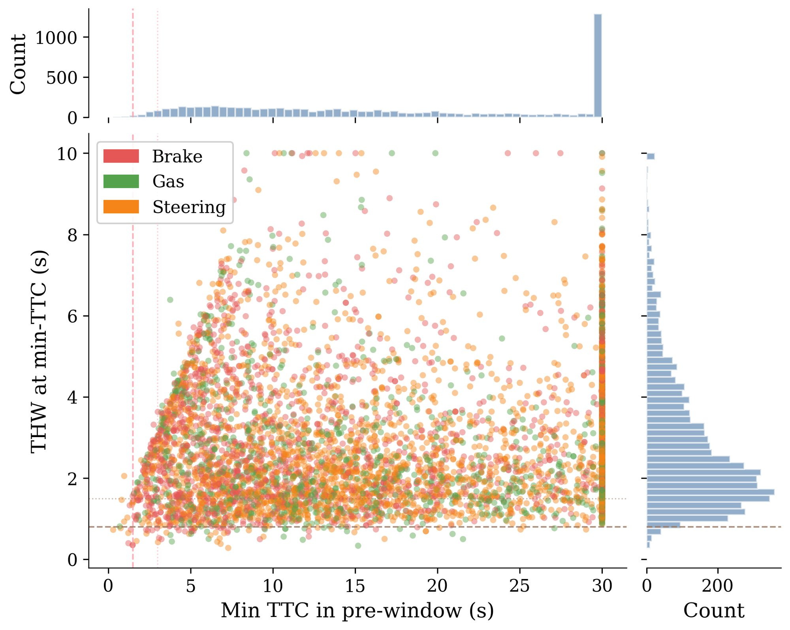

The long tail: most takeovers are calm; a few hundred are not.
Each point is a cover-takeover clip from release v2 with a valid lead: minimum TTC against minimum THW inside the 20 s (log scales, capped at 30 s and 10 s). Dashed thresholds at TTC 3.0 s and THW 0.8 s define "critical" in the paper. Colour by criticality or by trigger.

Two definitions, both shown: 285 kinematic-threshold cases on the paper's 15,659 clips (paper); 749 manually reviewed safety-critical clips in release v2 (16,446 clips) (release). Release-v2 lead-valid population: 4,786 clips — 77 below both thresholds, 739 low-TTC only, 432 low-THW only.